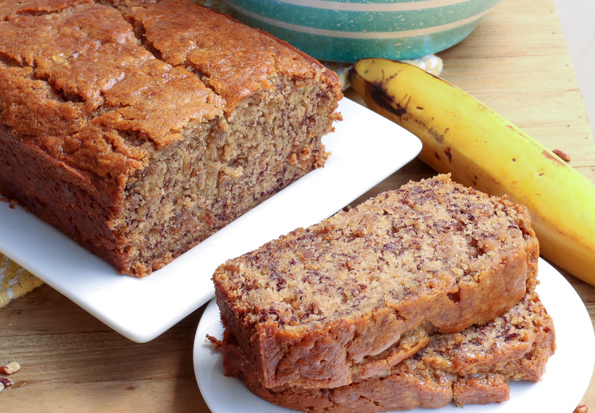

Banana Bread

Description
Banana bread is an easy to make treat that the whole family will enjoy. It is sweet and buttery with a
moist texture. Toast it and add butter, eat it straight out of the fridge or right off the counter for
a delicious snack.
Ingredients
- 3 ripe bananas
- 1/3 cup of butter
- 1/2 tsp of baking soda
- A pinch of salt
- 3/4 cup of suger
- 1 egg, beaten
- 1 teaspoon vanilla extract
- 1-1/2 cups all-purpose flour
Instructions
- Pre-heat oven to 350 degrees Fahrenheit
- Apply butter to sides and bottom of 8"x4" loaf pan
- In a bowl, mash bananas and add melted butter
- Put flour to the side
- Mix in all remaining ingredients except flour into the banana/butter mixer
- Mix in flour last
- Pour batter into buttered loaf pan
- Bake in pre-heated oven for 55 to 65 minutes, until done
- Let loaf cool in pan for 5 minutes. Remove from pan and serve hot or let cool before serving